Bali ~ INDONÉSIA
15 jours sur l'île paradisiaque
📌Découvrir Bali en 15 jours
Un voyage à Bali ça se prépare… ou pas ! Tout dépend de vos envies. Mon chéri connaissant déjà Bali, Lombok et les îles Gili, nous avons décidé de rester 2 semaines uniquement sur Bali et en profiter pour faire le plein d'activités.
Nous n'avons donc réservé que nos premières nuits et nous avons souhaité découvrir l'île au jour le jour, en décidant notre parcours au fur et à mesure. L'avantage ? Être libre d'aller partout ! Le petit inconvénient c'est de ne pas avoir trop le choix sur les hébergements.
 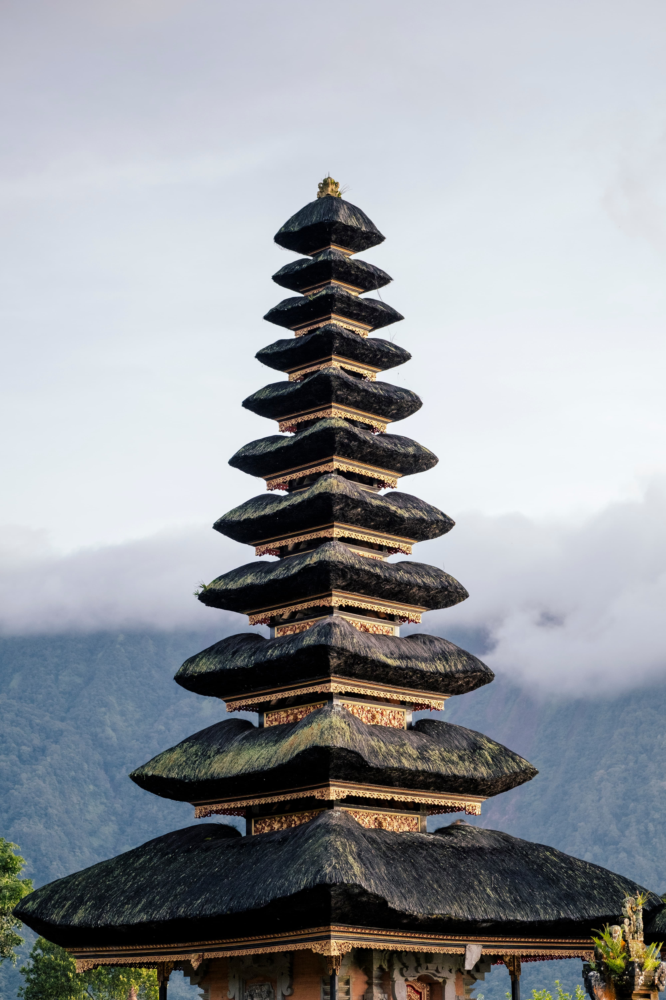
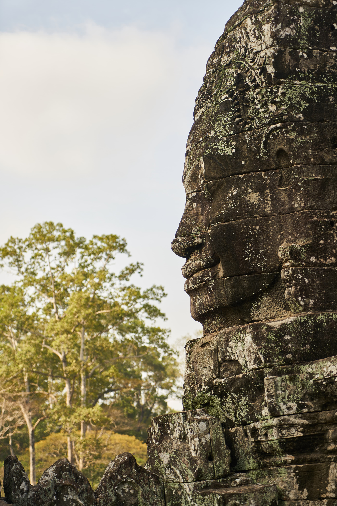
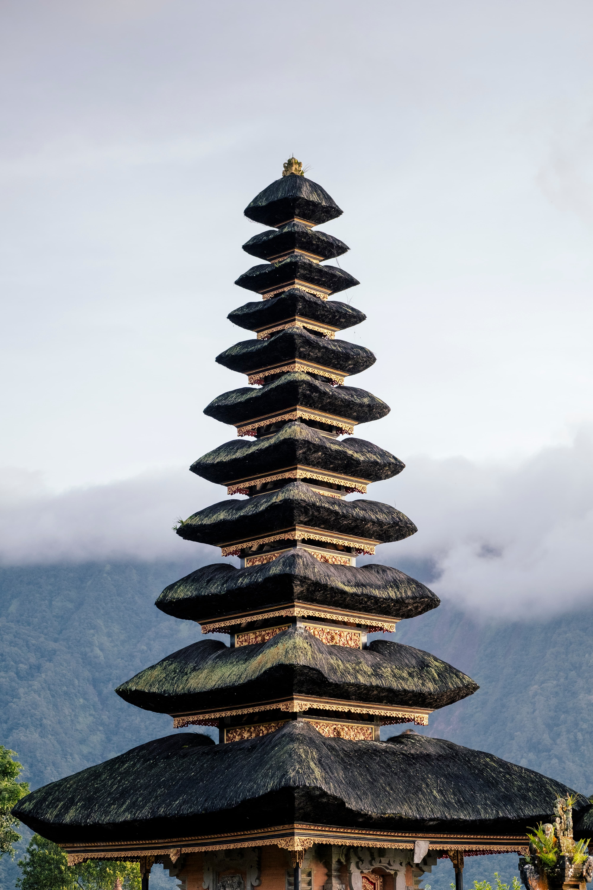
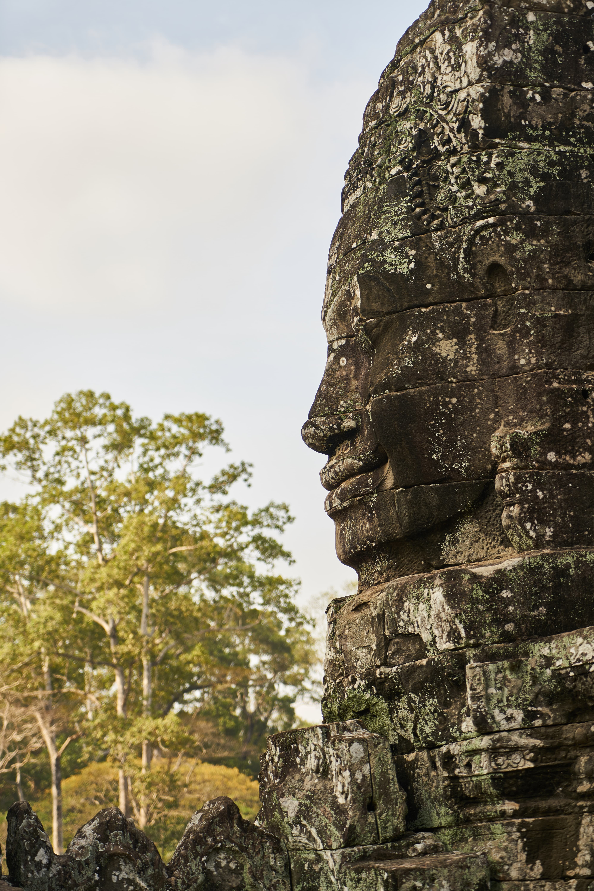
Sommaire
- 1. Pourquoi visiter Bali ?
- 2. Mon itinéraire de 15 jours sur l'île de Bali
- 3. Hébergements à Bali
- 4. La Péninsule de Bukit et Uluwatu
- 5. Ubud & ses alentours
1. Pourquoi visiter Bali ?
Bali, c'est bien plus qu'une simple destination touristique. C'est une île où la nature, la culture et la spiritualité se rencontrent. On y découvre des rizières verdoyantes à perte de vue, des plages idéales pour le surf ou le repos, et des temples hindous chargés d'histoire.
L'ambiance est paisible, les habitants sont accueillants, et la nourriture est aussi savoureuse que variée. Que tu cherches l'aventure, le calme ou une vraie immersion culturelle, Bali a quelque chose à offrir, sans artifice.
2. Mon itinéraire de 15 jours sur l'île de Bali
Jour 1 : Arrivée à Denpasar - Transfert à Ubud
- Repos après le vol
- Installation à Ubud
Jour 2 à 4 : Ubud
- Monkey Forest
- Rizières de Tegalalang
Jour 5 : Mont Batur (optionnel)
- Départ très tôt pour le lever du soleil
- Vue impressionnante si météo favorable
Jour 6 à 8 : Sidemen ou Amed
- Campagne, rizières (Sidemen) ou snorkeling (Amed)
- Temple Lempuyang (Porte du Paradis)
Jour 9 à 11 : Îles Nusa
- Kelingking Beach, Broken Beach, Crystal Bay
- Snorkeling avec raies mantas
Jour 12 à 14 : Sud de Bali (Seminyak, Canggu ou Uluwatu)
- Plages, restaurants, boutiques selon l'endroit
- Danse Kecak au temple d'Uluwatu
Jour 15 : Retour
- Derniers achats ou massage
- Retour à l'aéroport
 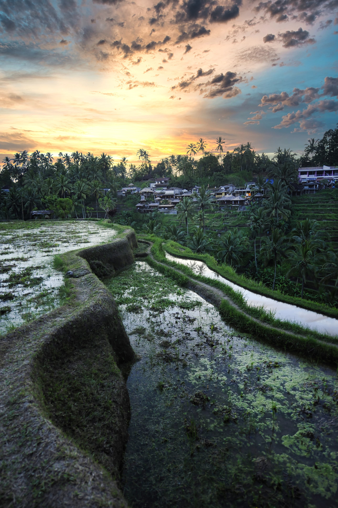
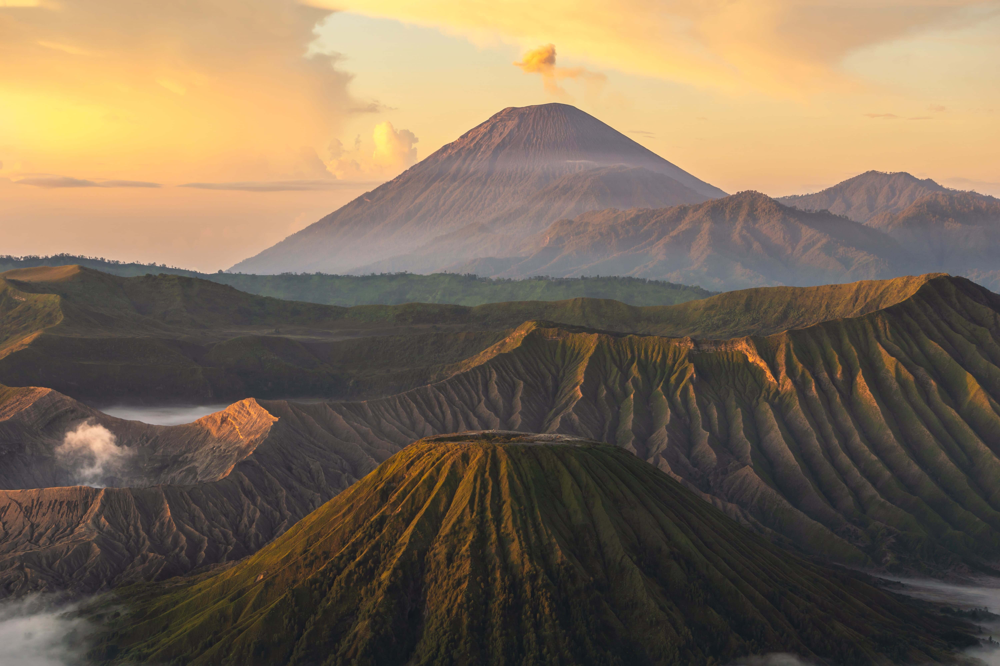
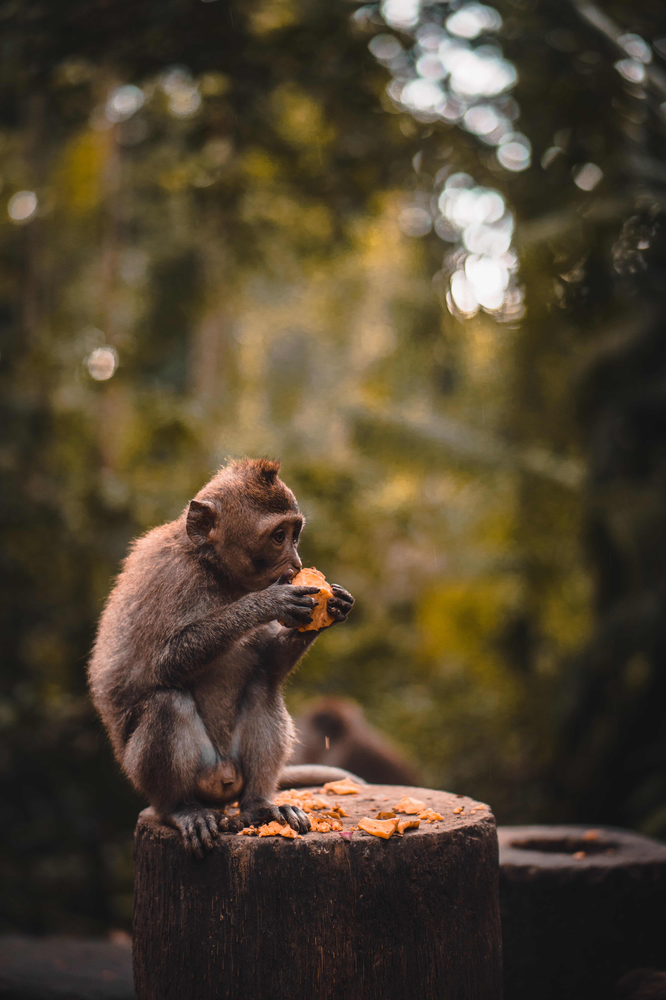
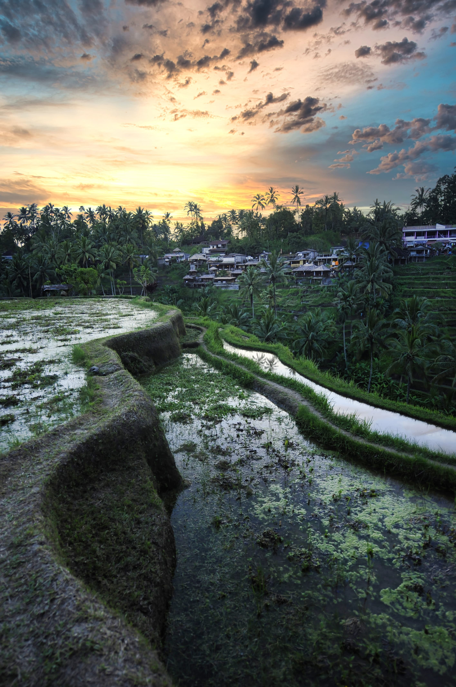
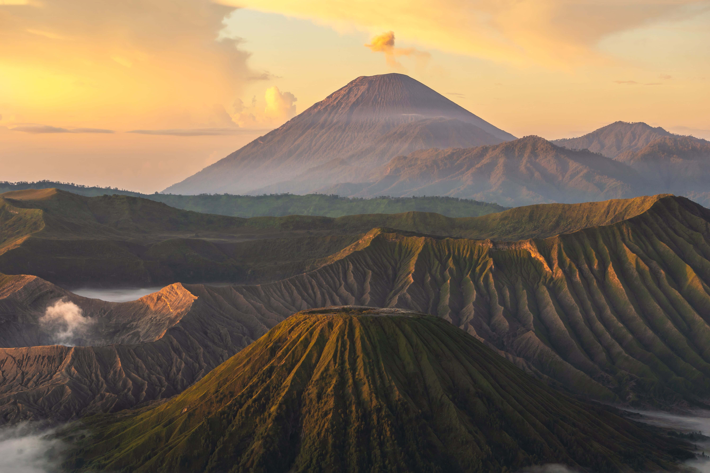
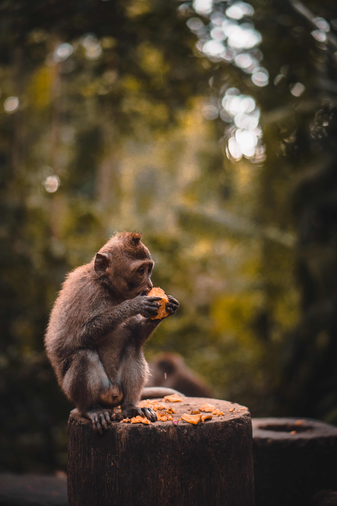
3. Hébergements à Bali
Ubud (centre culturel et spirituel)
- Type : Guesthouses, hôtels avec vue rizière, retraites yoga
- Budget : 15 à 100€ / nuit
- Conseil : Choisir un logement au calme, à max 15 min à pied du centre
Sidemen ou Amed (authenticité et nature)
- Type : Petits hôtels familiaux, bungalows
- Budget : 10 à 50€ / nuit
- Conseil : Privilégier un hébergement avec vue sur les montagnes ou la mer
Nusa Penida (aventure et paysages spectaculaires)
- Type : Écolodges, hôtels simples, bungalows
- Budget : 15 à 70€ / nuit
- Conseil : Choisir l'est de l'île pour être plus au calme et proche des spots
4. La Péninsule de Bukit et Uluwatu
Pourquoi visiter cette région ?
- Falaises impressionnantes surplombant l'océan
- Plages idéales pour le surf : Padang Padang, Bingin, Uluwatu
- Atmosphère détendue, un peu bohème
- Couchers de soleil spectaculaires
5. Ubud & ses alentours
Activités à faire
- Visiter la Monkey Forest
- Explorer les rizières en terrasse de Tegalalang
- Découvrir les temples : Goa Gajah, Tirta Empul, Gunung Kawi
Ambiance et conseils
- Ubud est le cœur culturel et spirituel de Bali
- Se promener dans le centre-ville, boutiques d'artisanat
- Prendre un scooter pour explorer les alentours
Le mot de la fin
Après ces 15 jours passés à arpenter les sentiers, plages et villages de Bali, il est temps de faire une pause et de revenir sur cette expérience unique. Bali ne se contente pas d'être une simple destination touristique, c'est un véritable voyage intérieur où chaque instant invite à la découverte, à la rencontre et à la sérénité.
Que tu cherches l'aventure, la détente ou une immersion culturelle profonde, cette île saura toujours te surprendre. Alors n'hésite pas à partir à ton rythme, à écouter tes envies et à te laisser porter par la magie de Bali.
Bon voyage et surtout, profite pleinement de chaque moment !
 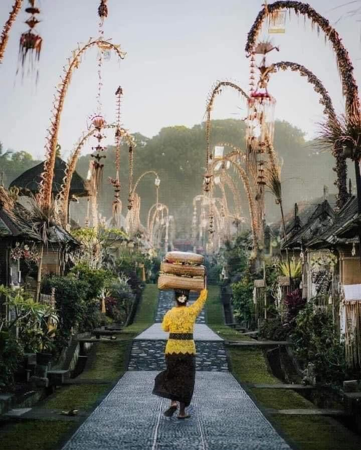
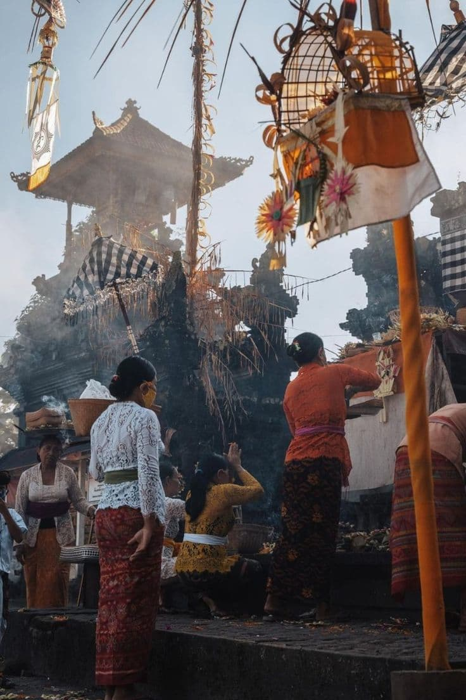
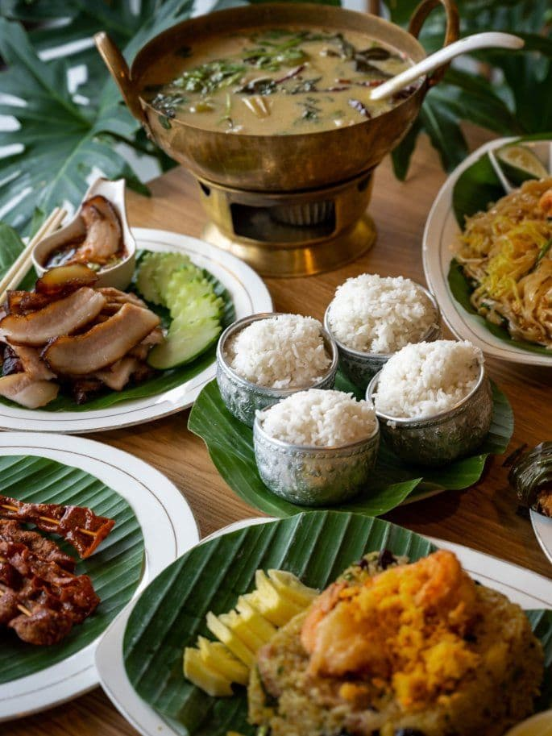
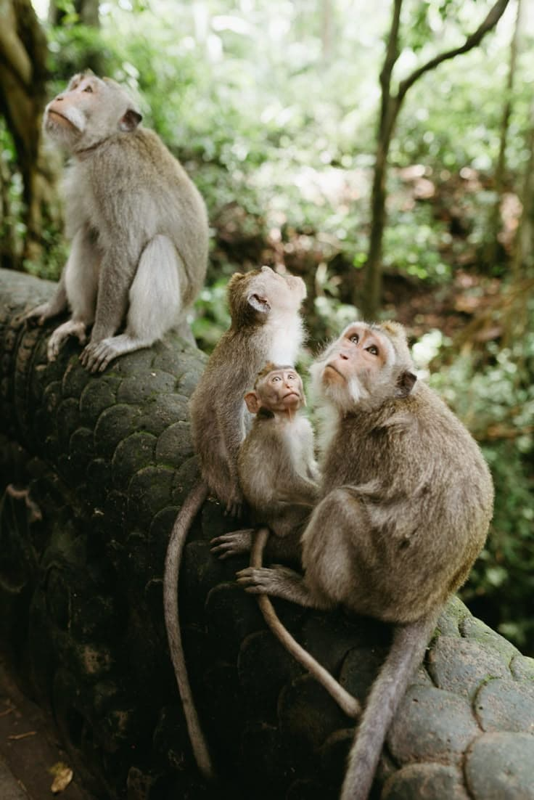
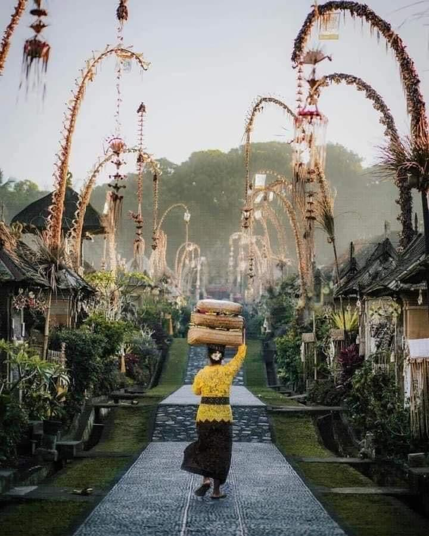
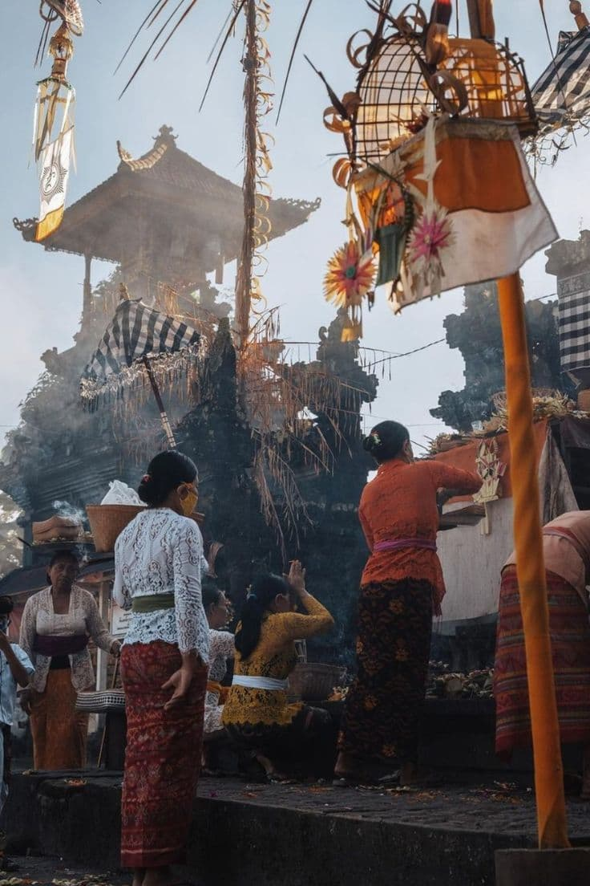
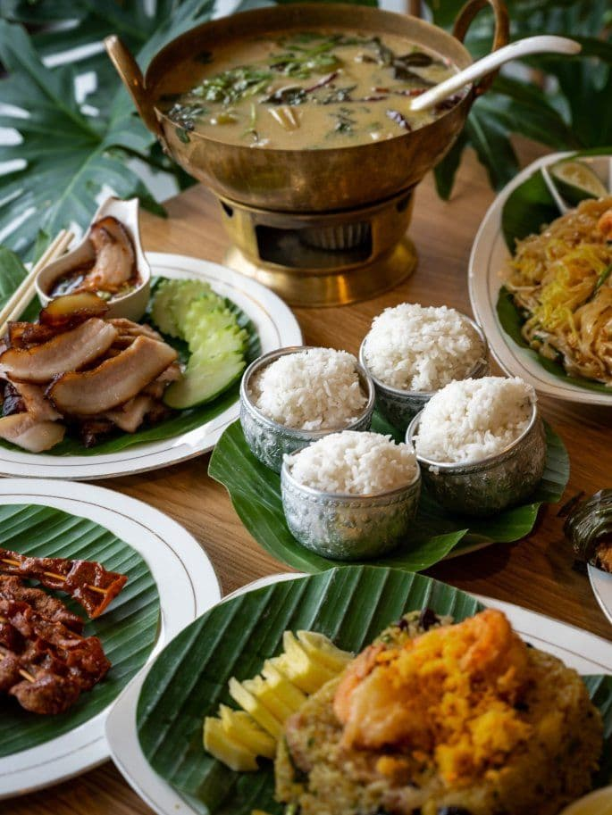
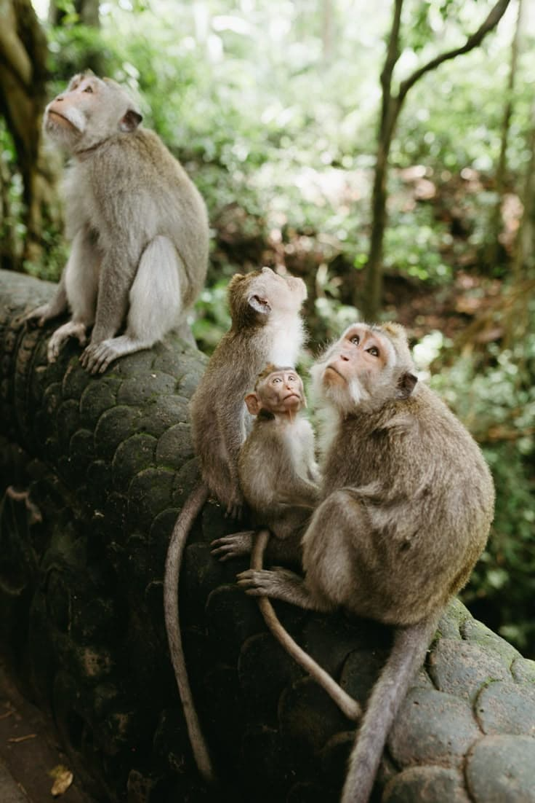